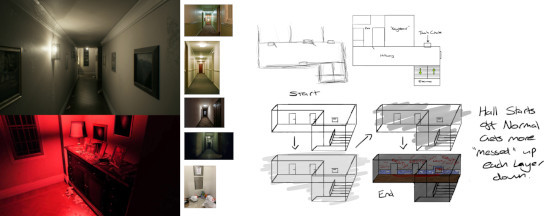
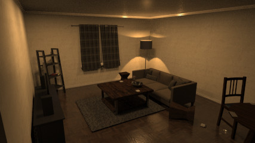
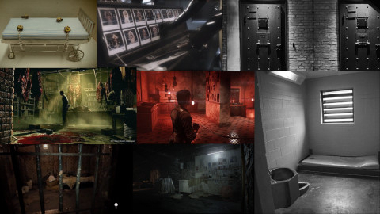
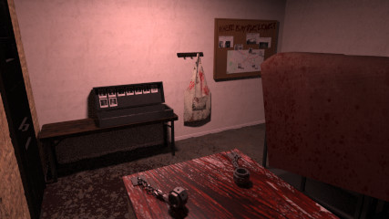
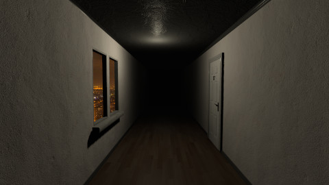
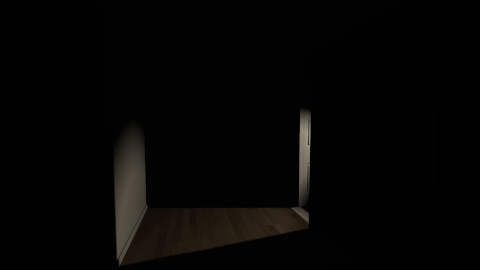
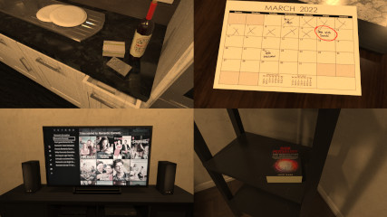
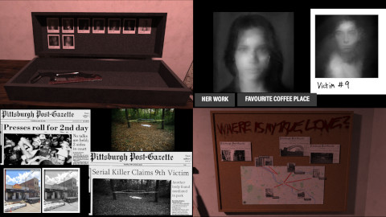
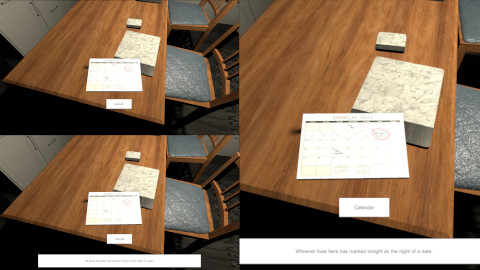

My Dissertation Project was carried out throughout the entirety of my Fourth year at University.
I was given the option to create a short project alongside my Dissertation that would allow me to
support the research section of my disseration. As testing was a part of the dissertation, I could either use
an already made game or create my own. I decided to create my own project so that I could accurately try to represent
the ideas and concepts laid out in my Literature Review, which had a focus on Environmental Storytelling as a
Tool within Horror Games, and test their effectiveness through the use of participants
who volunteered to take part in playing the short experience.
Throughout the year I researched and collected information relating to my topic, using a variety of sources,
and began to plan out a project design that was influenced by the information i gathered. The information helped
me decide on attributes of the project such as pacing, location, lighting, colour and more.
Genre: Horror, Storytelling, Walking-Sim
Engine: Unity
Development Period: Approx 1 month
Platform: PC
The initial project idea had been inspired by the P.T (Konami Productions) with the same hallway & apartment repeating
itself and slowly changing over time. I wanted the story to convey the mind of the character that the player would be
controlling. The environment would be a physical representation of the character's psyche, slowly spiralling as they come to terms with the
horrible things that they had done.
On each subsequent layer, things around the apartment and hallway would change slowly feeding the player more information
about the narrative.

P.T Demo (2014) An early sketched concept
However due to the short amount of extra time I had to dedicate to this project I had to take my initial idea and condense the scope
down to a more managable size given the time period. With this in mind I planned out all of the potential rooms that I could
use and this allowed me to remove excess if needed, planning ahead to best suit the time frame that I had for the project.
Using a mix of reference images of small apartments, sources from my life and also taking inspiration from P.T (Konami Productions),
I was able to create a couple of rooms for the apartment and then began to work on the Red Room. The Red Room would replace the bathroom and become the
final room that the participant would enter, completing the whole picture of what had happened in the apartment and in the city that the apartment was
based in.

For the Red Room and the models that were in it, I drew inspiration from a few sources, Gotham (2018) was a large
inspiration for the actions of the Killer and what they did. With the room itself drawing inspiration from sources like The Evil Within (Tango Gameworks)
and also from Resident Evil 7: Biohazard (Capcom). Trying to use models to show that people were captured, brought here and then kept alive, potentially
tortured and then killed.

Also using literature sources, the decision to make the room red was based upon two separate sources from my literature review. "Red stimulates the physical and adrenalin. It
raises blood pressure, heart rate and respiration." (O'Connor. Z, 2011) & another source that spoke in depth about how "red can be inviting and is used in marketing as the
warmth of red is alluring, but it can also represent danger as certain red things in nature are dangerous to eat and may also indicate anger." (Humphery. N, 1976).
With this knowledge, red was used as a way to lure the player into the room and once they step around a tarp blocking their view, they realise that this is a dangerous place to be.

The intention of this project was to create a short horror narrative experience using a basis of information about environmental storytelling
and it's uses within the horror genre. It had relevant and backed references to help plan and design the project.
After the project had been completed, participants were recruited and split into two separate test groups who played slightly
different versions of the project and afterwards had to fill out a questionnaire about the experience.
With the intention of having the data collected from the participants be able to inform on the effectiveness of certain implementations
with a primary focus on environmental storytelling, but also touching upon sound, light and the tension and release cycle aswell.
With the research gathered, I learned that grounding a player in their environment within the first few seconds of starting is very important
to help immerse them into the experience quickly. So to help with this the start of the hallway was kept to help build up a familiar setting and
also the tension, using it as a section to quickly let the player know where they are and then begin to prime them for what lies ahead.

After walking down the hall a little, the lights go out and footsteps can be heard running overhead. The door to the apartment further down the hall
swings open, letting some light out. A common technique used in games is using lighting to help tell players where they have to go next without explicitly
telling them. This technique was used in this project to help guide player from room to room, and to keep the tensions high as there are many dark corners
in the apartment and distant noises can be heard throughout the environment.

Once the player enters the apartment, after a short period the front door will slam shut and remain closed for the rest of the experience, trapping the player
inside.
From here the player will then have time to explore first the Kitchen and then the Living Room, looking around the environment taking time to digest any
information they come across. Once they explore the 2 rooms, the lights will go out and a hidden door into the Red Room will creak open, luring them deeper
into the apartment.

There is an idea that, when it comes to Narcissists and their failed relationships, they tend to keep trophies from these relationships as another method
to continue their self-enhancement. They will hold onto objects from their relationships with high status partners to prove their self worth.
Whether this be true or not, I found it to be an interesting concept.
For this part of the project I spent a lot of time in Photoshop creating textures for newspaper clippings, editing images of people to display as Victims in
the Killers trophy box. I used Pittsburgh as the setting for the project and went on Google Maps to find real places, pin-point them on my map and label them things like "Her House", "Her Work" etc, to imply
that the Killer had been stalking their victims beforehand.
On top of this I also used an image of an old Pittsburgh Post-Gazette newspaper and then edited it to write my own stories over it to create multiple short stories about what had happened to
previous victims to improve the world building in the project. The aim of using a real life city and finding imagery to edit from that city was to add some versimilitude to the
experience.

The whole purpose of these models was to help convey the narrative to the player and to also emphasise the idea of Narcissists collecting trophies and displaying them to prove
their worth.
After finalising my 3D models I then exported everything and imported it into Unity.
I created a character controller and began to animate certain key points in the environment to help
the player keep moving and exploring as well as to keep them on edge while playing. Doing my best to keep my
design in line with my research, for example;
Having the project set at night with some rain, I used a skybox of a city and also created a rain particle system and also tried to create atmospheric sounds around the apartment in order to make it feel more grounded. Some subtle noises, like rain hitting the windows, occassional footsteps else where in the building and more.
To help introduce a control group to aid with telling how effective the Narrative elements were in
the project, I created a small pop up that would appear showing the player information about certain
objects if they were close to them and also looking in their direction. This pop up was only visible in
Group A.
Group B had no pop up and received no additional information throughout their playthrough.

Group A Pop Up UI with additional information about the object.
Areas that I believe that I did well on during the process of this project;
These are some areas that I believe I could improve upon.
© All rights reserved
{kind=link}
{kind=link}
{kind=link}
{kind=link}
{kind=link}
{kind=link}
{kind=link}
{kind=link}
{kind=link}
{kind=link}
{kind=link}
{kind=link}
{kind=link}
{kind=link}
{kind=link}
{kind=link}
{kind=link}
{kind=link}
{kind=link}
{kind=link}
{kind=link}